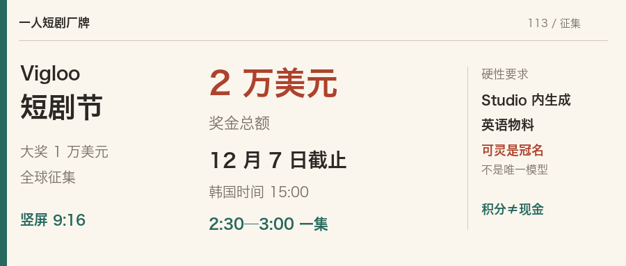

Vigloo短剧节开放：2万美元奖金，12月7日截止
11月16日，韩国微短剧平台 Vigloo（母公司 SpoonLabs）开放第二届 Short Drama Festival 2 征集。官方活动页显示，报名截止12月7日15:00（韩国时间，北京时间14:00），奖金总额2万美元，大奖1万美元。
要交什么？
用 Vigloo Studio 做一集2分30秒—3分钟的竖屏9:16代表集；再交英语第1—5集梗概、英语标题海报、英语SRT和Studio项目。硬性规则是全部元素用生成式AI、并在 Vigloo Studio 内生成；后期可以在站外完成。
奖金和后续
奖金总额2万美元，大奖1万美元，另有优秀奖、鼓励奖。未获奖也会被评估系列潜力；签后续制作合同可获制作积分，并有机会在 Vigloo 连载、参与分账。分账比例、积分单价本轮没公布，不能把“制作积分”当现金。
三个别误读
第一，活动名带“x KlingAI 4.0”，但可灵是冠名/推荐工具，不是唯一模型；官方样片也标了 Seedance 2.5，硬性要求只是“在 Studio 内生成”。第二，预注册已关闭，5000积分是此前预注册选中者的权益，现在报名没有。第三，900+投稿、58%来自韩国以外、237个国家、1300万观众、400+系列都是当事方口径，未经独立核验。
边界：信息来自 Vigloo 官方活动页、GlobeNewswire/Spoonlabs Japan 官方通稿及媒体转写；分账比例、积分价值、评审标准未公布；不构成参赛或收入建议。截止时间以官方页为准。
---
来源：Vigloo 官方活动页 https://vigloostudio.com/en/contests/2026-short-drama-festival-2 ；GlobeNewswire 官方通稿 https://www.globenewswire.com/news-release/2026/11/16/3404053/0/en/vigloo-launches-global-search-for-its-next-microdrama-series-with-short-drama-festival-2.html ；Spoonlabs Japan 通稿 https://digitalpr.jp/r/148491 ；Vertical Observer https://verticalobserver.com/news/2026-11-16-vigloo-short-drama-festival-2/ 。